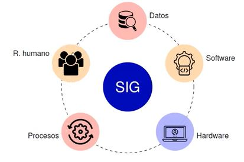
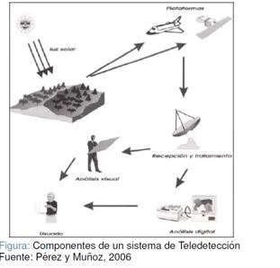
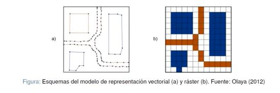
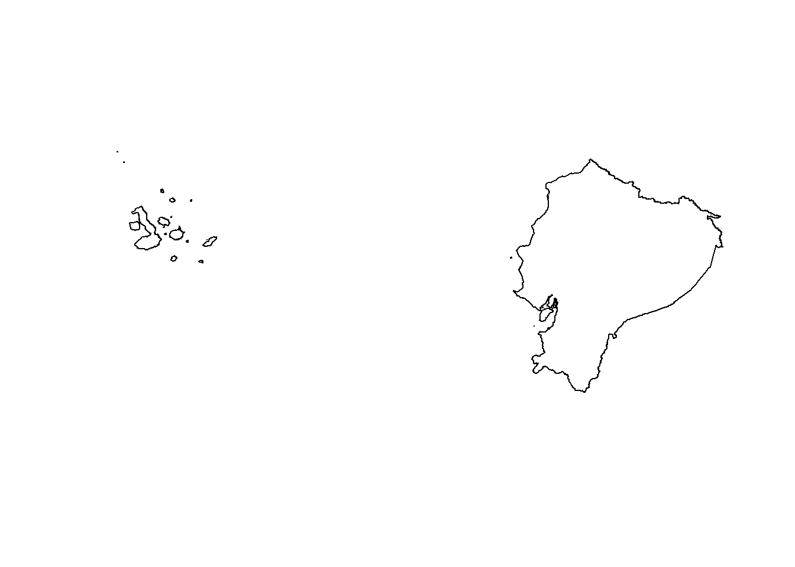

- Datos Informativos
Semana: 1
Fecha: Pasaje, 02 de Junio 2022
Fundamentación Introducción a la Geomática
objetivo
Procedimineto

La Geomática es una ciencia que engloba las Geociencias (por ejemplo: los sistemas de información geográfica (SIG)) con la integración y aplicación de las tecnologias de la información y la comunicación (TICs) Esta integración hace posible la captura, procesamiento, análisis, interpretación, almacenamiento modelización, aplicación y difusión de información digital geoespacial o localizada, aplicable en los ámbitos de la ingenieria, el territorio y la sociedad.


El primer paso hacia la creación del dato geográfico implica el establecimiento de un modelo conceptual relativo a cómo se ha de interpretar la realidad geográfica. Se trata de conceptualizar el espacio estudiado, la variable tratada y la variación de esta a lo largo del espacio.
*Un campo es un modelo de variación dentro de un marco n-dimensional en el cual en cada punto dentro de dicho masco se tiene un valor de la variable estudiada
*La mayoria de las variables que se emplean en un SIG necesitan un único valor para describirse (piensese en variables como la elevación, la temperatura o la presión atmosérica, que solo requieren de un numero para expresarse)
*No asocia a cada punto geográfico un valor, sino que concibe un entorno geografico cono un espacia vacia sobre el que se sitúan distintos elementos (entidades) que lo van menando
*Son en general más sencillas de comprender como concepto fuera de un ámbito técnico
Los modelos geográficos nos ofrecen una concepcion particular del espacio geográfico y sus atributos. En base a ellos, el siguiente paso es reducir las propiedades de dichos modelos a un conjunto finito de elementos de tal modo que el registro de dichos elementos sirva para almacenar la realidad que los modelos geográficos describen. Para ello, empleamos los modelos de representación, también denominados modelos de datos.

Los modelos de representación definen una forma de recoger la realidad mediante unidades básicas (sean estas celdas en una malla, o bien primitivas geométricas definidas de una u otra manera), mientras que los modelos de almacenamiento plantean básicamente un esquema de cómo convertir dichas unidades en valores numéricos de la forma más eficiente. Es decir, como escribir dichos valores en un soporte digital o guardarlos en la memoria del ordenador de la mejor manera posible
- Datos Informativos
Semana: 2
Fecha: Pasaje, 02 de Junio 2022
Fundamentación
objetivo
Procedimineto
-Conectar directorio, primero crear carpeta dentro del disco duro, si está fraccionado utilizar, la unidad D,caso contrario utilizar la unidad C
Crear una carpeta:
dir.create(“Geomatica”)
-Instalar y llamar librerias
library(pacman)
p_load(raster,sf,tidyverse,rgdal,printr)Cargar información
pts <- read.csv("C:/Users/Eirck/Desktop/diarios/Fer9819.github.io/DatosMuestreo.csv") %>% as_tibble()
table(pts)| Id | x | y | Da | pH | Freq |
|---|---|---|---|---|---|
| QBP1 | 620699.228 | 9636159.72 | 1.8 | 7.5 | 1 |
Pasar de tabla a dato espacial
pts_sf <- st_as_sf(pts, coords = c("x","y"), crs = 32717)
pts_sp <- as(pts_sf, 'Spatial')
table(pts_sf)| Id | Da | pH | geometry | Freq |
|---|---|---|---|---|
| QBP1 | 1.8 | 7.5 | c(620699.228, 9636159.72) | 1 |
- TAMBIÉN SE PUEDE BAJAR DATOS DESDE LA WEB
ecu <- getData("GADM", country = "ECU", level = 0 )
plot(ecu)